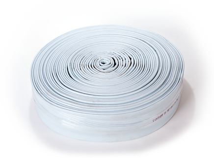

Description: A polyester needle felt with a PU (Polyurethan) coating and a sewn and taped joint.
Diameter Range: 4, 6, and 8"
Material: 100% polyester with a polyurethane 300 g/m2 external coating
Overall thickness (raw material): 4.5 mm +/- .3 including coating
Seam: Sewn
Seam sealing: PU (Polyurethan) tape
Installation Method(s): Air or water inversion
Resin type: Silicate, epoxy, and polyester
Cure temperature/method: Ambient, hot water or stream < 194°F / 90°C
Impregnation Method: Vacuum and pressure rollers set to a specified gap
Pinch gap roller setting: 10 mm
Bursting pressure: .8 bar unsupported
Undersize: approximately 10%
Expansion:
- Expansion at .05 bar: approximately 8%
- Expansion at .10 bar: approximately 10%
- Expansion at .40 bar: approximately 15%
These values were determined as average values at a temperature of 194°F / 90°C. Expansion and bursting pressures were determined on a 5" liner.
This information is provided in good faith only and without warranty. All calculations should be verified. The roller gap setting is for guidance only. We strongly recommend that the resin addition be monitored and controlled by adjustment of the roller gap setting. Ultimately, it is the correct resin addition/impregnation that is imperative, not the roller gap.
This liner should be visually inspected for defects before use. Inability to maintain a good vacuum during impregnation may indicate damage. On detection of any defect, the liner should not be used. This liner is only guaranteed when used with the limitations herein. Should it be necessary to use the liner in circumstances outside of these limits please contact us first for advice. We reserve the right to make technical changes without notice as a result of continuous development.